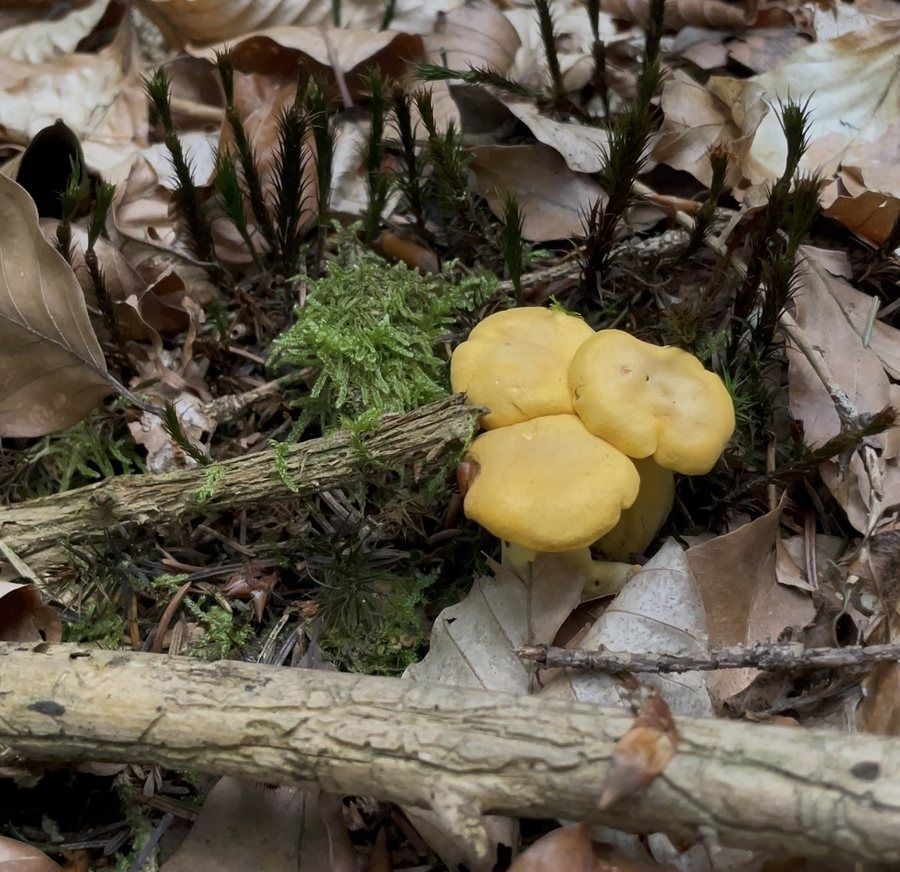
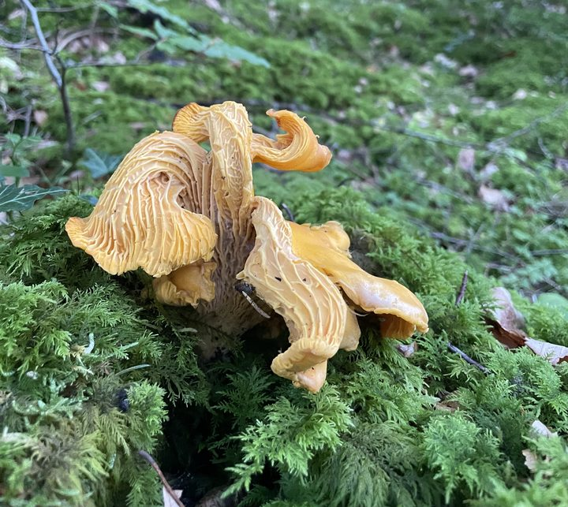

Echter Pfifferling, Eierschwammerl, Reherl: Cantharellus cibarius bleibt wochenlang stehen, mag es sauer und mager und schmeckt nach mehr als nur nach Pilz. Was die Forschung über ihn weiß – und wo sie ehrlich passen muss.
Stand September 2026 · Grundlage sind eine europaweite Erbgut-Studie zur Gattung, lebensmittelchemische Arbeiten aus München und Finnland, Langzeitdaten zum Stickstoff sowie die amtlichen Sammelregeln in Deutschland, Österreich und der Schweiz. Alle Quellen am Ende der Seite.

Drei junge Echte Pfifferlinge zwischen Buchenlaub, Fichtennadeln und Moos. Selten allein, fast nie in Eile.
Die kurze Antwort, falls du es eilig hast
Er ist ein Dauerläufer. Pfifferlinge wachsen langsam und bleiben lange stehen – in Messreihen im Schnitt 44 Tage, einzelne über 90. Ein Steinpilz ist meist nach einer Woche fertig.
Er will es sauer und mager. Am besten gedeiht er in gut durchlässigen Waldböden mit pH 4 bis 5,5 und wenig Stickstoff. Zu viel Stickstoff aus der Luft hat ihm in Teilen Europas sichtbar geschadet.
Sein Geschmack hat eine Extra-Ebene. Neben Umami und einer feinen Bitterkeit stecken in ihm Fettsäure-Abkömmlinge, die im Mund für Fülle sorgen. Nachgewiesen hat das ein Team der TU München in Freising.
Um wen es geht
Einer von acht. Aber der, den alle meinen.
„Pfifferling“ klingt nach einer Art. Tatsächlich ist es eine Gattung. Eine Erbgut-Studie hat 2017 die europäischen Pfifferlinge neu sortiert: Von rund 30 beschriebenen Namen blieben acht echte Arten übrig.
Auf dieser Seite geht es um eine davon: den Echten Pfifferling, Cantharellus cibarius. Er ist die Art, nach der die ganze Gattung benannt ist, und die, die in Deutschland, Österreich und der Schweiz am häufigsten im Korb landet.
Seine nächsten Verwandten in unseren Wäldern sind unter anderem der Amethyst-Pfifferling (C. amethysteus), der Blasse Pfifferling (C. pallens) sowie C. ferruginascens und C. friesii, die beide an Laubbäume gebunden sind. Trompetenpfifferling und Totentrompete heißen zwar ähnlich, gehören aber zur Nachbargattung Craterellus.
Warum das wichtig ist: Viele Zahlen, die im Netz über „den Pfifferling“ kursieren, stammen von anderen Arten – etwa aus Nordamerika, wo der Name jahrzehntelang falsch vergeben wurde. Wo wir auf solche Daten ausweichen müssen, steht das dabei.
Ein Pilz, viele Namen
Wie der Echte Pfifferling im deutschen Sprachraum heißt. Schematische Anordnung, keine exakte Sprachkarte.
Regionale Zuordnung nach dem Digitalen Wörterbuch der deutschen Sprache (DWDS) · Darstellung: Pilzgebiete
Und warum „Pfiffer“?
Der Name hat nichts mit Pfeifen zu tun. Er geht auf Pfeffer zurück – wegen des leicht scharfen Geschmacks, schon im Althochdeutschen als phiferia belegt. Weil der Pilz oft massenhaft auftrat, stand „Pfifferling“ ab dem 16. Jahrhundert auch für etwas Wertloses. Daher kommt „keinen Pfifferling wert“. Heute ist das eher ein Witz.
Baumpartner und Boden
Wenig wählerisch beim Baum. Sehr wählerisch beim Boden.
Wie der Steinpilz lebt der Pfifferling in Mykorrhiza: Seine Pilzfäden umhüllen feinste Baumwurzeln, liefern Wasser und Mineralstoffe und bekommen dafür Zucker. Ohne lebenden Baum kein Pfifferling.
Bei der Baumart ist der Echte Pfifferling erstaunlich offen. Die europäischen Belege der Erbgut-Studie stammen unter anderem von Fichte, Wald- und Strandkiefer, Buche, Stieleiche, Edelkastanie und Birke. Die Autoren fanden bei ihm kaum eine Bindung an eine bestimmte Baumgruppe – er kommt in reinen Laub- wie in reinen Nadelbeständen vor.
Ganz beliebig ist es trotzdem nicht. In Laborversuchen besiedelte ein schwedischer Pfifferlingsstamm Fichten- und Kiefernwurzeln, Birkenwurzeln aber nicht. Die Partnerwahl kann also sogar innerhalb der Art unterschiedlich ausfallen.
Deutlich enger sind seine Ansprüche an den Boden: gut durchlässig, nährstoffarm, wenig Stickstoff, sauer. An einem schwedischen Fundort lag der Boden-pH im Mittel bei 4,1. In Südeuropa, am Rand seines Verbreitungsgebiets, hält er sich klar an saure Böden und fehlt im trockenen Mittelmeerklima ganz.
Wo der Pfifferling auf der pH-Skala zu Hause ist
Je kleiner der pH-Wert, desto saurer der Boden. Der markierte Bereich gilt als der, in dem der Echte Pfifferling am besten wächst.
Bereich nach Pilz et al. 2003 (Übersicht, u. a. nach Danell 1994); Fundort-Wert nach Danell et al. 1993 · Darstellung: Pilzgebiete
Wie alt muss der Wald sein?
In Forstpflanzungen beginnen Pfifferlinge zu fruchten, wenn die Bäume 10 bis 40 Jahre alt sind – je nach Klima und Wuchs. Am reichsten tragen oft junge bis mittelalte Bestände, alte Wälder sind aber nicht ausgeschlossen. Hat sich eine Kolonie einmal etabliert, kann sie sehr lange leben, solange ihr Baumpartner sie versorgt. Das erklärt, warum gute Stellen oft über Jahre gut bleiben.
Braucht er viel Wasser?
Feuchte hilft: Regen, während sich die Anlagen bilden, liefert das Wasser für die Streckung, und eine feuchte Bodenoberfläche verhindert, dass die langsam wachsenden Fruchtkörper austrocknen. Gleichzeitig nennt die Forschung ausdrücklich gut durchlässige Böden. Staunässe ist also nicht sein Ding.
Mag er es am Bacherl?
Eine Studie, die Pfifferlinge gezielt an Bachläufen findet, kennen wir nicht. Belegt ist nur: Im trockenen Süden Europas weicht er auf lokal feuchte Stellen aus, teils bis ins Torfmoos. Für unsere Breiten würden wir daraus keine Bach-Regel ableiten.
Ab wann wächst er?
In Europa fruchtet er grob von Juni bis Oktober. Einen so genau vermessenen Wetter-Auslöser wie beim Steinpilz gibt es für den Echten Pfifferling bisher nicht. Wer Zahlen dazu liest, sollte prüfen, ob sie nicht von nordamerikanischen Arten stammen.
Stimmt es, dass er in Gruppen wächst?
Ja. Pfifferlinge fruchten meist gesellig: viele Exemplare im selben Bereich, oft in Grüppchen wie auf dem Titelbild. Mit einem langlebigen Geflecht darunter tauchen sie zudem gern Jahr für Jahr an denselben Stellen auf.
Verbreitung
Sehr häufig. Und trotzdem deutlich weniger als früher.
Die Rote Liste der Großpilze Deutschlands führt den Echten Pfifferling als ungefährdet und aktuell sehr häufig. Im selben Eintrag steht aber auch: langfristig starker Rückgang, kurzfristig weitere Abnahme in unbekanntem Ausmaß.
Als Hauptverdächtiger gilt Stickstoff aus der Luft – aus Landwirtschaft, Verkehr und Industrie. Pilzfäden, die an magere Böden angepasst sind, kommen mit einem Überangebot schlecht zurecht. Laborversuche passen dazu: Der Pfifferling kann Nitrat nur schlecht verwerten.
Das beste Beweisstück kommt aus den Niederlanden. Dort gingen Mykorrhiza-Pilze im späten 20. Jahrhundert stark zurück. Nachdem die Stickstoffeinträge ab Mitte der 1990er sanken, drehten viele Trends ins Positive. Beim Echten Pfifferling wurde der Aufwärtstrend ab 1998 statistisch deutlich.
Weniger Stickstoff, mehr Pfifferlinge
Schematischer Verlauf der Mykorrhiza-Pilze in den Niederlanden: Rückgang bis Mitte der 1980er, Erholung nach dem Sinken der Stickstoffeinträge. Nicht maßstäblich.
Nach van Strien et al., Journal of Applied Ecology 2018 (Fundmeldungen, statistisch auf Erfassungsfehler geprüft) · Darstellung: Pilzgebiete
Gibt es in Österreich mehr? Und in den Bergen?
Ehrliche Antwort: Dazu gibt es keine Studie, die das belastbar vergleicht. Fundkarten zeigen vor allem, wo Menschen suchen und melden. Die Schweizer Pilzdatenbank weist selbst darauf hin, dass ihre Meldungen oberhalb von etwa 1.000 Metern stark abnehmen und in den höheren Lagen Daten fehlen. Eine Karte mit weniger Punkten in den Bergen beweist also nicht, dass dort weniger wachsen.
Was man sagen kann: Entscheidend sind Baumpartner, saurer Boden und wenig Stickstoff – und diese Kombination gibt es im Flachland wie im Gebirge. Genau diese Faktoren legt Pilzgebiete übereinander, statt mit Höhenmetern zu raten.
Das Tempo
Der Steinpilz sprintet. Der Pfifferling läuft Marathon.

Ausnahmeexemplar: alt, groß und stark gewellt. So sieht man ihn selten – ein Zeichen, wie lange ein Fruchtkörper stehen kann.
Im Steinpilz-Artikel ging es um Tempo: Ein Steinpilz pumpt sich in Tagen mit Wasser voll und ist nach etwa einer Woche fertig. Der Pfifferling spielt ein anderes Spiel.
Die längsten Messreihen dazu stammen aus Oregon. Dort wurde jeder Fruchtkörper markiert und alle zwei Wochen vermessen. Ergebnis: Pfifferlinge wuchsen nur 2 bis 5 Zentimeter pro Monat, blieben aber im Schnitt 44 Tage stehen, manche über 90.
Wichtige Einschränkung: Das waren nordamerikanische Arten, nicht C. cibarius. Die europäische Erbgut-Studie greift diese Werte aber ausdrücklich auf, um zu erklären, warum auch unsere Pfifferlinge je nach Alter so unterschiedlich aussehen.
Passend dazu verstreut ein Pfifferling seine Sporen nicht in einem kurzen Schub, sondern gleichmäßig über ein bis zwei Monate.
Wie lange ein Fruchtkörper im Wald steht
Steinpilz nach einer Studie mit wöchentlicher Ernte in Spanien. Pfifferling nach Langzeitbeobachtungen in Oregon an nahe verwandten Arten.
Steinpilz: Ortega-Martínez et al., Mycorrhiza 2011 · Pfifferling: Largent & Sime 1995 und Norvell 1995, zusammengefasst in Pilz et al. 2003 (nordamerikanische Arten) · Darstellung: Pilzgebiete
Warum der Pfifferling so selten madig ist
Wer wochenlang stehen bleibt, muss sich gegen Fraß wehren. Und das gelingt ihm auffällig gut: In einer finnischen Untersuchung war weniger als 1 Prozent der Pfifferlinge von Larven befallen – bei anderen Pilzgruppen waren es 40 bis 80 Prozent. Auch Schnecken lassen ihn oft links liegen.
Warum, ist nicht abschließend geklärt. Eine Spur: Wird ein Pfifferling verletzt, bildet er enzymatisch eine eigene Fettsäure, die Cibarsäure. Ob sie Insekten tatsächlich abschreckt, wurde allerdings nie getestet.
Madenbefall im Vergleich
Anteil befallener Fruchtkörper in einer finnischen Untersuchung.
Hackman & Meinander 1979, zitiert in Pilz et al. 2003 · Cibarsäure: Pang & Sterner 1991 · Darstellung: Pilzgebiete
Er wächst zum Licht
Im Gewächshaus drehten sich Pfifferlinge zu einer festen Lichtquelle hin. Und im Wald sind junge Fruchtkörper oft noch blass, solange sie unter Moos oder Streu stecken – die kräftige Farbe kommt erst mit dem Licht. Für die Suche heißt das: Die frischesten Exemplare sind nicht immer die auffälligsten.
Was drinsteckt
Gelb wie Karotte. Mit Vitamin D, aber keiner festen Menge.
Die Farbe kommt von Carotinoiden, vor allem Beta-Carotin – demselben Farbstoff wie in Karotten. Unter Pilzen ist das eine Seltenheit.
Bekannt ist der Pfifferling außerdem für Vitamin D2. Eine schwedische Studie hat einzelne getrocknete Fruchtkörper gemessen und eine riesige Spanne gefunden. Die Autoren folgern selbst, dass Nährwerttabellen mit einem einzigen Mittelwert hier wenig aussagen. Eine schwedische Lebensmitteltabelle nannte 2,5 Mikrogramm pro 100 Gramm, Messstudien kamen im Mittel eher auf 13 bis 14.
Eiweiß enthält er auf Basis der tatsächlichen Aminosäuren rund 10 Prozent der Trockenmasse. Frühere, höhere Werte hatten unverdauliches Chitin mitgezählt.
Vitamin D2: gleicher Pilz, sehr verschiedene Werte
Gemessen an einzelnen getrockneten Pfifferlingen. Mikrogramm pro Gramm Trockenmasse.
Rangel-Castro, Staffas & Danell, Mycological Research 2002 · Tabellenvergleich: Teichmann et al., LWT 2007 · Darstellung: Pilzgebiete
Und das Cäsium? Der Pfifferling liegt in den amtlichen Messprogrammen meist im niedrigen Bereich: in Österreich mit einem Median von 45 Becquerel pro Kilogramm bei 51 Proben, in Bayern zwischen 25 und 520 bei allerdings nur sieben Proben. Die ganze Einordnung steht im Artikel Cäsium in Wildpilzen.
Warum er so gut schmeckt
Kokumi
Das japanische Wort für den Geschmack, der Gerichte „voller“ macht
Forscher der TU München und des Leibniz-Instituts in Freising haben Pfifferlinge Schritt für Schritt zerlegt und jede Fraktion verkostet. Am stärksten schmeckten die Extrakte nach Umami und bitter, dicht gefolgt von Mundfülle – auf Japanisch Kokumi.
Verantwortlich für diese Fülle sind besondere Fettsäure-Abkömmlinge mit einer Dreifachbindung. Das Clevere daran: Sie wirken schon in Mengen, die noch nicht bitter schmecken. Sie schmecken also nicht selbst nach etwas, sondern verstärken, was sonst im Topf ist.
Transparenzhinweis: Die Folgestudie des Teams wurde von einem Aromenhersteller mitfinanziert.
Das Geschmacksprofil eines Pfifferling-Extrakts
Mittlere Intensitäten der drei stärksten Eindrücke, wie in der Münchner Studie veröffentlicht.
Eine finnische Analyse fand bei allen untersuchten Waldpilzen Umami-Aminosäuren unter den häufigsten freien Aminosäuren. Den höchsten Gehalt an bitter schmeckenden Aminosäuren hatte aber der Pfifferling. Das passt gut zum „Pfeffer“ im Namen – ein Beweis für die Herkunft des Wortes ist es natürlich nicht.
Und der Duft?
Riecht man an gegarten Pfifferlingen, beschreibt ein geschultes Panel gekochte Karotte, Wald und etwas Karton. Im Labor stechen vor allem fettige, grüne und holzige Aldehyde hervor. Und der Pfifferling hatte als einziger von vier untersuchten Waldpilzen β-Ionon und verwandte Duftstoffe.
Das ist spannend, weil β-Ionon aus dem gelben Farbstoff Beta-Carotin entsteht – und auch in Aprikosen vorkommt. Der oft beschriebene Aprikosenduft könnte hier eine Erklärung haben. Belegt ist dieser Zusammenhang aber nicht; die Stoffe hinter dem Fruchtduft gelten weiter als nicht vollständig geklärt.
Vom Farbstoff zum Duft Hypothese
Wird Beta-Carotin an zwei Stellen gespalten, entstehen zwei Moleküle β-Ionon, ein Duftstoff mit veilchenartig-fruchtiger Note. Vereinfachtes Schema.
Nachweis im Pfifferling: Aisala et al., Food Chemistry 2019 · Entstehung und Vorkommen: Übersichtsarbeit in Plants 2021 · Darstellung: Pilzgebiete
Beim Suchen
Was beim Pfifferling anders ist als beim Steinpilz
Beide leben mit Bäumen, beide mögen den Wald. Aber aus dem, was man über den Pfifferling weiß, folgen ein paar eigene Regeln. Wo es eine Schlussfolgerung von uns ist und keine Messung, steht das dabei.
Punkt
Steinpilz
Echter Pfifferling
Zeitfenster
Schiebt oft in Wellen, ausgelöst durch rund drei Wochen passender Temperatur und Regen. Einzelne Fruchtkörper sind schnell fertig.
Fruchtkörper stehen wochenlang. Eine gute Stelle bleibt länger „gefüllt“, auch wenn das ideale Wetter schon vorbei ist. Schlussfolgerung
Wo zuerst schauen
Baumpartner und Bodenfeuchte.
Boden: sauer, mager, gut durchlässig. Der Baum ist beim Echten Pfifferling weniger entscheidend als der Boden.
Wie schauen
Einen vergleichbaren Lichteffekt beschreibt die Literatur nicht.
Junge Exemplare sind unter Moos und Laub oft noch blass. Genau hinsehen, tief hinsehen.
Wiederkommen
Das Bestandesalter beeinflusst, wie schnell und wie groß die Fruchtkörper werden (Studie aus Spanien).
Langlebige Kolonien. Gute Stellen bleiben oft über Jahre gut.
Kleine stehen lassen
Wächst schnell: in einer Woche auf rund 70 bis 130 Gramm (Spanien).
Wächst langsam, hat aber Zeit. Kleine stehen zu lassen kostet wenig. In einer zehnjährigen Studie in Oregon senkte systematisches Absammeln die Erträge nicht. andere Art
Maden
Deutlich häufiger: Andere Pilzgruppen waren in Finnland zu 40 bis 80 Prozent befallen.
Selten. Das ändert nichts daran, dass alte, feuchte oder angegangene Pilze nicht in den Korb gehören.
Für beide gilt: Wo du hintrittst, zählt
Ein Schweizer Langzeitversuch hat gezeigt, dass nicht das Pflücken, sondern das Betreten des Waldbodens die Zahl der Fruchtkörper senkt. Drehen oder schneiden ist dagegen zweitrangig. Mehr dazu im Steinpilz-Artikel.
Wie viel du mitnehmen darfst
Die Regeln unterscheiden sich je nach Land deutlich. In Schutzgebieten gelten überall eigene, meist strengere Vorgaben.
Besonders geschützt – mit Ausnahme. Alle heimischen Pfifferlingsarten stehen unter besonderem Schutz. Erlaubt ist das Sammeln nur in geringen Mengen für den eigenen Bedarf. Eine feste Kilogrammzahl nennt das Bundesrecht nicht; die Auslegung ist regional unterschiedlich.
Höchstens 2 kg pro Person und Tag, so das Forstgesetz. Organisierte Sammelveranstaltungen sind verboten. Dazu kommen Landesregeln: In Kärnten etwa dürfen Eierschwammerl nur vom 15. Juni bis 30. September und nur zwischen 7 und 18 Uhr gesammelt werden.
Jeder Kanton regelt es selbst. Viele begrenzen auf 2 kg pro Tag, einige kennen Schontage. Einzelne Kantone setzen für Eierschwämme eine eigene, niedrigere Grenze – Luzern etwa 0,5 kg. Die aktuelle Übersicht führt die VAPKO.
Bundesartenschutzverordnung § 2 · Forstgesetz 1975 § 174 (AT) · Kärntner Pilzverordnung · VAPKO, Kantonale Pilzsammelbestimmungen · Stand der Regeln vor jedem Sammeln prüfen
Vorsicht
Der Pfifferling hat gefährliche Doppelgänger
Er gilt als einsteigerfreundlich. Das stimmt nur, solange man sich wirklich sicher ist. Belegt sind unter anderem diese Verwechslungen:
Raukopf-Arten mit Orellanin. Der Spitzgebuckelte Raukopf wird gelegentlich für Pfifferlinge gehalten. Schon ein bis drei Exemplare können die Nieren schwer schädigen – und die ersten Beschwerden kommen oft erst nach Tagen, wenn niemand mehr an das Pilzgericht denkt. Der Orangefuchsige Raukopf enthält dasselbe Gift.
Ölbaumtrichterling. Er wurde in Europa und Nordamerika mit Pfifferlingen verwechselt und löst heftige Magen-Darm-Beschwerden aus.
„Falsche Pfifferlinge“. Arten der Gattung Hygrophoropsis ähneln ihm in Farbe und Form so sehr, dass sie diesen Namen tragen.
Unterscheidungsmerkmale listen wir hier bewusst nicht auf. Das Bundesinstitut für Risikobewertung weist darauf hin, dass Apps Pilze oft nicht eindeutig erkennen, und die Deutsche Gesellschaft für Mykologie rät, sich an geprüfte Pilzsachverständige zu wenden. Pilzgebiete ist eine Karte für Standorte – keine Bestimmungshilfe.
Unsicher? Pilze prüfen lassen. Deutschland: Pilzsachverständige der DGfM · Schweiz: amtliche Pilzkontrollstellen der VAPKO · Österreich: Pilzberatungsstellen der Länder und Vereine. Verdacht auf Vergiftung? Bei schweren Beschwerden 112. Sonst: Giftinformationszentrum deines Bundeslandes (DE) · Vergiftungsinformationszentrale +43 1 406 43 43 (AT) · Tox Info Suisse 145 (CH). Pilzreste aufheben.
Fazit
Geduld zahlt sich beim Pfifferling doppelt aus
Wo. Saurer, magerer, durchlässiger Waldboden mit einem lebenden Baumpartner. Ob Fichte, Kiefer, Buche oder Eiche, ist beim Echten Pfifferling zweitrangig.
Wann. Von Juni bis Oktober – und weil seine Fruchtkörper lange stehen, verzeiht er ein paar Tage Verspätung.
Wie. Genau hinschauen, wenig trampeln, Kleine stehen lassen, nur Sicheres mitnehmen.
Und wenn er dann in der Pfanne liegt, schmeckt man nicht nur Pilz, sondern Pfeffer, Umami und eine Fülle, für die es auf Deutsch nicht einmal ein eigenes Wort gibt.
Alle Zahlen auf dieser Seite stammen aus den folgenden Veröffentlichungen. Grafiken und Text sind eigene Darstellungen, die Fotos eigene Aufnahmen.
Olariaga, I. et al. — Cantharellus (Cantharellales, Basidiomycota) revisited in Europe through a multigene phylogeny. Fungal Diversity 83 (2017) 263–292. Grundlage zu den acht europäischen Arten, den Baumpartnern des Echten Pfifferlings und seiner Bodenvorliebe. doi.org/10.1007/s13225-016-0376-7
Pilz, D.; Norvell, L.; Danell, E.; Molina, R. — Ecology and management of commercially harvested chanterelle mushrooms. USDA Forest Service, PNW-GTR-576 (2003). Übersichtsarbeit; Grundlage zu pH und Stickstoff, Bestandesalter, Wachstum und Standdauer (nordamerikanische Arten), Sporenbildung, Lichtwachstum, Madenbefall, Eiweiß, Carotinoiden und historischen Namen. doi.org/10.2737/PNW-GTR-576
Danell, E.; Alström, S.; Ternström, A. — Pseudomonas fluorescens in association with fruit bodies of the ectomycorrhizal mushroom Cantharellus cibarius. Mycological Research 97 (1993) 1148–1152. Grundlage des Boden-pH von 4,1. ScienceDirect
Rangel-Castro, J. I.; Danell, E.; Taylor, A. F. S. — Use of different nitrogen sources by the edible ectomycorrhizal mushroom Cantharellus cibarius. Mycorrhiza 12 (2002). Grundlage zur schlechten Nitratverwertung. doi.org/10.1007/s00572-002-0160-2
Dämmrich, F. et al. — Rote Liste der Großpilze Deutschlands. Naturschutz und Biologische Vielfalt 70 (8), 2016; Artensteckbrief beim Rote-Liste-Zentrum. Eintrag Pfifferling
van Strien, A. J. et al. — Woodland ectomycorrhizal fungi benefit from large-scale reduction in nitrogen deposition in the Netherlands. Journal of Applied Ecology 55 (2018) 290–298. doi.org/10.1111/1365-2664.12944
SwissFungi / WSL — Verbreitungsatlas der Pilze der Schweiz. Grundlage zur Abnahme der Fundmeldungen oberhalb von etwa 1.000 Metern. waldwissen.net
Hall, K.; Lemmond, B.; Smith, M. E. — The Common Chanterelles (Cantharellus and Craterellus) of Florida. EDIS PP369, University of Florida (2023). Grundlage zum geselligen Wuchs der Gattung und zur Bezeichnung „falsche Pfifferlinge“. EDIS
Kumar, K. et al. — Nutritional, nutraceutical, and medicinal potential of Cantharellus cibarius: a comprehensive review. Food Science & Nutrition (2025). Grundlage zur Fruchtungszeit Juni bis Oktober. doi.org/10.1002/fsn3.4641
Brejon Lamartinière, E.; Hoffman, J. I. — Predicting porcini: a decade of sporocarp monitoring reveals the meteorological triggers of Boletus edulis fruiting in central European beech forests. bioRxiv-Preprint, überarbeitete Fassung 2026, noch nicht begutachtet. Vergleich Steinpilz: Fruchtung in Wellen, Temperatur über 20 und Regen über 26 Tage. doi.org/10.64898/2025.12.12.693895
Egli, S. et al. — Mushroom picking does not impair future harvests. Biological Conservation 129 (2006) 271–276. Grundlage zum Betreten des Waldbodens. doi.org/10.1016/j.biocon.2005.10.042
Ortega-Martínez, P. et al. — Tree age influences on the development of edible ectomycorrhizal fungi sporocarps in Pinus sylvestris stands. Mycorrhiza 21 (2011) 65–70. Vergleichswerte Steinpilz (Wachstum pro Woche, Bestandesalter). doi.org/10.1007/s00572-010-0320-8
Pang, Z.; Sterner, O. — Cibaric acid, a new fatty acid derivative formed enzymatically in damaged fruit bodies of Cantharellus cibarius. Journal of Organic Chemistry 56 (1991) 1233–1235. doi.org/10.1021/jo00003a054
Rangel-Castro, J. I.; Staffas, A.; Danell, E. — The ergocalciferol content of dried pigmented and albino Cantharellus cibarius fruit bodies. Mycological Research 106 (2002) 70–73. doi.org/10.1017/S0953756201005299
Teichmann, A. et al. — Sterol and vitamin D2 concentrations in cultivated and wild grown mushrooms. LWT – Food Science and Technology (2007). Vergleich Lebensmitteltabelle und Messstudien. ScienceDirect
Mittermeier, V. K.; Dunkel, A.; Hofmann, T. — Discovery of taste modulating octadecadien-12-ynoic acids in golden chanterelles. Food Chemistry 269 (2018) 53–62; sowie Mittermeier et al., J. Agric. Food Chem. 68 (2020) 5741–5751. doi.org/10.1016/j.foodchem.2018.06.123 · doi.org/10.1021/acs.jafc.0c02034
Manninen, H. et al. — Free amino acids and 5′-nucleotides in Finnish forest mushrooms. Food Chemistry 247 (2018) 23–28. doi.org/10.1016/j.foodchem.2017.12.014
Aisala, H. et al. — Odor-contributing volatile compounds of wild edible Nordic mushrooms. Food Chemistry 283 (2019) 566–578. doi.org/10.1016/j.foodchem.2019.01.053
β-Ionone: Its Occurrence and Biological Function and Metabolic Engineering. Plants 10 (2021) 754. Entstehung aus Beta-Carotin und Vorkommen in Obst und Gemüse. mdpi.com
Digitales Wörterbuch der deutschen Sprache — Einträge „Pfifferling“ und „Eierschwammerl“ (inkl. Etymologisches Wörterbuch nach Pfeifer). dwds.de
Hedman, H. et al. — Long-term clinical outcome for patients poisoned by the fungal nephrotoxin orellanine. BMC Nephrology 18 (2017). doi.org/10.1186/s12882-017-0533-6 · Diaz, J. H. — Mistaken mushroom poisonings. Wilderness & Environmental Medicine (2016). doi.org/10.1016/j.wem.2015.12.015
BfR — Pilze: Verwechslungen können tödlich enden (2024) · DGfM — Giftpilze und Pilzvergiftungen.bfr.bund.de · dgfm-ev.de
Hinweis. Diese Seite fasst veröffentlichte Fachliteratur zusammen und ist keine Bestimmungshilfe und keine Fundgarantie. Einige Werte stammen von nahe verwandten, nicht europäischen Arten; das ist jeweils gekennzeichnet. Sammelregeln können sich ändern – maßgeblich ist die jeweils geltende Fassung. Pilzgebiete zeigt Standortbedingungen, keine Fundorte. Iss nie einen Pilz, den du nicht sicher bestimmt hast, und frage im Zweifel eine Pilzsachverständige oder einen Pilzsachverständigen.